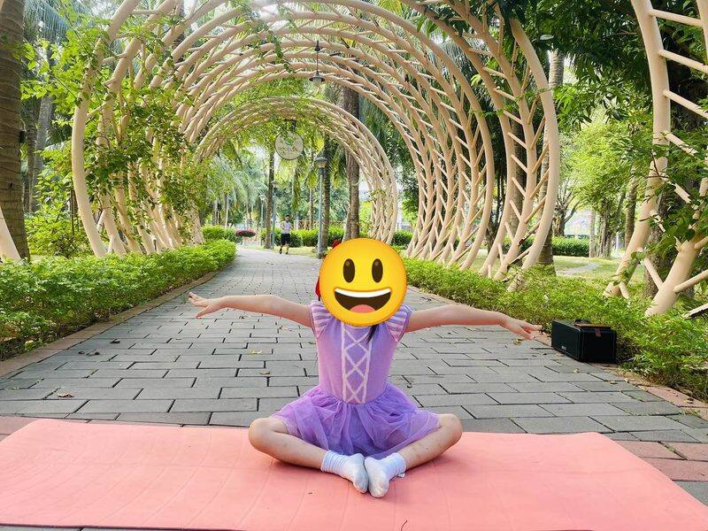

Chủ đề 30 · Côn trùng trong vườn
Ong Nhỏ và khu vườn
🌟 Bài học trong câu chuyện
Giới luật yoga: Aparigraha – Không tham, biết chia sẻ. Bé vui khi chia sẻ đồ chơi, đồ ăn với người khác.
Kỹ năng sống: Làm việc nhóm, chia sẻ phần thưởng.
1. Khởi động (2 phút)
Cả lớp ngồi xếp bằng thành vòng tròn. Cùng thở 3 hơi thở bông hoa: hít vào bằng mũi như ngửi hoa, thở ra bằng miệng thật chậm. Chắp tay trước ngực và chào nhau: “Namaste, chào các bạn!”
2. Kể chuyện và tập (10 phút)
Trong khu vườn nhỏ, Ong Nhỏ đi lấy mật. Ong muốn giữ hết mật cho riêng mình.
-

1Con bướm
🧘 Tư thế Con bướm (Butterfly)
Bướm bay qua chào: "Hoa nở đẹp quá!"
Cách làm: Ngồi, áp hai lòng bàn chân vào nhau, tay nắm bàn chân, hai gối đập nhẹ lên xuống như cánh bướm. Giữ 3 đến 5 nhịp thở.
-
 2
2Con ong
🧘 Tư thế Thở tiếng ong (Bee Breath)
Ong Nhỏ bay vo ve "ừmmm", hút thật nhiều mật.
Cách làm: Ngồi, dùng ngón tay bịt nhẹ hai tai, hít vào, thở ra kêu "ừmmm" như ong bay. Giữ 3 đến 5 nhịp thở.
-
 3
3Con kiến
🧘 Tư thế Cái bàn ngược (Reverse Table)
Đàn Kiến khiêng hạt gạo, thấy Ong có nhiều mật, hỏi xin một giọt.
Cách làm: Ngồi, tay chống phía sau, bàn chân đặt trên sàn, nâng hông lên phẳng như mặt bàn. Giữ 3 đến 5 nhịp thở.
-
🌼4
Sâu đo
🧘 Tư thế Sâu đo (Inchworm)
Ong Nhỏ lắc đầu: "Mật của mình!". Sâu Đo bò đi buồn bã.
Cách làm: Đứng cúi chạm sàn, đi hai tay ra thành tấm ván, rồi đi chân lên gần tay. Giữ 3 đến 5 nhịp thở.
-
🐞5
Ốc sên
🧘 Tư thế Em bé (Child's Pose)
Trời mưa to! Ong Nhỏ ướt cánh, không bay được.
Cách làm: Quỳ gối, ngồi lên gót chân, cúi người cho trán chạm thảm, hai tay duỗi ra trước hoặc để xuôi bên người. Giữ 3 đến 5 nhịp thở.
-
🦋6
Châu chấu
🧘 Tư thế Châu chấu (Locust)
Châu Chấu và Kiến cùng che lá cho Ong trú mưa.
Cách làm: Nằm sấp, tay xuôi bên người, nhấc đầu, ngực và chân lên khỏi thảm. Giữ 3 đến 5 nhịp thở.
-
 7
7Bọ rùa
🧘 Tư thế Ôm gối tròn (Ball)
Bọ Rùa cuộn tròn bên Ong cho Ong đỡ lạnh.
Cách làm: Ngồi hoặc nằm, ôm hai gối sát vào ngực, cuộn tròn người như quả bóng. Giữ 3 đến 5 nhịp thở.
-
🐞8
Chuồn chuồn
🧘 Tư thế Máy bay (Warrior 3)
Tạnh mưa, Chuồn Chuồn đưa Ong về tổ.
Cách làm: Đứng trên một chân, nghiêng người về trước, chân kia duỗi ra sau, hai tay dang như cánh. Bé có thể vịn tường. Giữ 3 đến 5 nhịp thở.
-
9
Con nhện
🧘 Tư thế Con cua (Crab)
Ong Nhỏ hiểu ra: có bạn bè là quý nhất.
Cách làm: Ngồi, tay chống phía sau, bàn chân chống trước, nâng hông lên rồi bò ngang. Giữ 3 đến 5 nhịp thở.
-
 10
10Đom đóm
🧘 Tư thế Ngôi sao (Star)
Tối đó, Ong chia mật cho mọi người. Đom đóm thắp đèn, cả khu vườn liên hoan.
Cách làm: Đứng dang rộng hai chân, hai tay dang chéo lên cao, cả người thành ngôi sao năm cánh. Giữ 3 đến 5 nhịp thở.
3. Thư giãn (2 phút)
Các con nằm ngửa, tay chân thả lỏng, nhắm mắt lại. Cô nói nhẹ: “Hít vào thật chậm… thở ra thật chậm… Con nhớ lại câu chuyện vừa rồi, nhớ người bạn mình thích nhất trong truyện. Cơ thể con mềm như bông, nhẹ như mây.” Sau đó các con nghiêng người, từ từ ngồi dậy.
4. Trò chuyện cùng bé (1 phút)
Ong Nhỏ học được rằng chia sẻ làm mình có thêm bạn. Không tham, biết chia sẻ là Aparigraha.
Cô hỏi các con:
- Côn trùng nào làm ra mật ong?
- Con đã chia sẻ gì với bạn hôm nay?
Kết thúc bằng lời chào “Namaste” và một nụ cười.
Lưu ý cho thầy cô và bố mẹ: Tập trên thảm, không tập ngay sau khi ăn no. Bé chỉ làm tới mức thấy dễ chịu, không ép bé. Tư thế đứng một chân có thể cho bé vịn tường hoặc vịn tay người lớn.